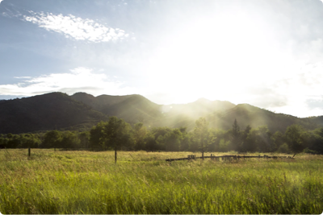
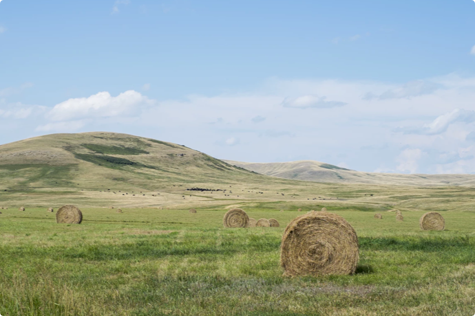
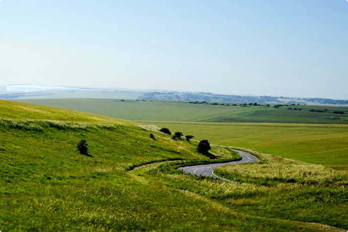
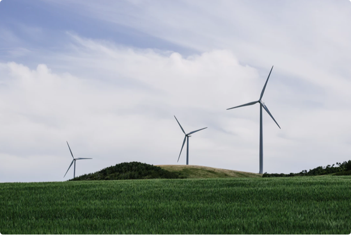
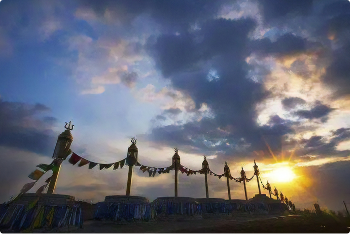
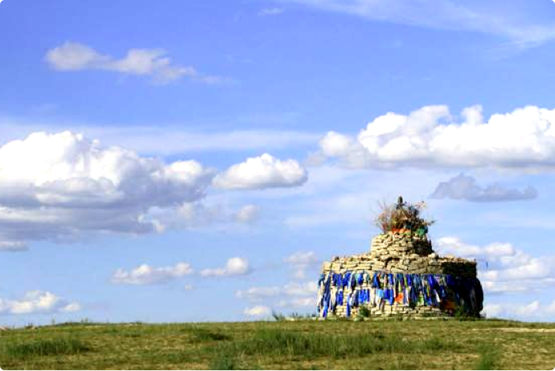

-
即将开始赛事
42:41:51:52
前去报名>
2018
第三届草原挑战赛
内蒙古辉腾锡勒草原
08/03 Wed 2018 08/06 Fri
关于草原挑战赛
2天
参赛时间
50公里
35公里+15公里
亚太地区商学院草原挑战赛面向全球华语商学院招募参赛队员，要求在两天内轻装完成50公里（35公里+15公里）草原越野任务，以期在三天的相处中，建立互助互信的同伴关系，体验和践行“理想、实践、责任”的赛事理念，从而以积极进取的商学院精神实现自我价值和承载社会责任。
赛事起源
- 
-
- 01
- 02
- 03
内蒙古
辉腾锡勒草原
泱泱华夏三万里河山，煌煌先哲五千年文明。赛事活动经过两年多的甄选，落地于“俯黄河、倚长城、托幽燕、拄太行”的古代草原丝绸之路的桥头堡——内蒙古乌兰察布市辉腾锡勒草原。“天苍苍，野茫茫，风吹草低见牛羊”恰是其时草本风光的真实写照，“敕勒川，阴山下，天似穹庐，笼盖四野”描写的就是赛事所在地——辉腾锡勒草原。此次赛事，邀请全球华语地区一流商学院精英学子参与，着力打造“竞技搭台、商务唱戏”的广泛合作平台，携手各界力量为此平台汇入涓涓细流，弘扬“心无界、域无疆”的突破精神，力争在效率上打造无时空限制的商业合作联盟，矢志于与中国的精英中产群体同呼吸、共命运、把脉未来。
赛事特色
- 鲜花高山草甸草原
- 白桦林
- 风车 溪谷
- 窝阔台点将屯兵处
亚太地区商学院草原挑战赛在内蒙古乌兰察布市察右中旗的辉腾锡勒草原举办。内蒙古乌兰察布市在内蒙古自治区的中部，一只金雕正欲展翅翱翔，这就是腾飞的乌兰察布。她位于京津冀、环渤海、呼包银榆三大经济圈结合处，东邻张家口、南连大同、西接呼和浩特、北延蒙古国，是进入东北、华北、西北三大经济圈和亚欧经济带的枢纽城市。也是我国"一带一路"的重要结点城市，地理位置十分重要。距北京240公里。是内蒙古离北京最近的城市。一小时高铁，半小时飞机就能到达美丽草原，属“北京八环"。
北魏王朝从这里发祥，老虎山、庙子沟、园子沟等古文化遗址，印证了乌兰察布农耕文明、游牧文明与长城文化的5000余年文明史。草原湖泊、温泉火山、芳草花海与蓝天白云交相辉映，是休养生息、避暑避霾的最佳胜地，素有“中国薯都、风电之都、草原皮都、神舟家园、中国草原避暑之都”的美誉。全市辖11个旗县市区，总面积5.45万平方公里，总人口287万，是一个以蒙古族为主体、汉族居多数的少数民族地区。2003年12月撤盟设市。
辉腾锡勒是蒙语，汉意为“寒冷的山梁”。位于内蒙古自治区中部，察哈尔右翼中旗南部，阴山北脉，距首都北京430㎞，距首府呼和浩特110㎞，距呼和浩特白塔国际机场95千米，距京包铁路卓资山站30㎞，距乌兰察布67㎞，距乌兰察布机场58㎞，距208国道65㎞。在2014年10月23日，辉腾锡勒草原所处的乌兰察布市，被正式评为“中国草原避暑之都”。
辉腾锡勒是典型的高山草甸草原，平均海拔2100m，面积600平方公里，植物覆盖率80%～95%。辉腾锡勒草原上天然湖泊星罗棋布，素有“九十九”泉之称。辉腾锡勒风能稳定性强，持续性好，品质高，是建设风电场最理想的场所。辉腾锡勒草场是世界少有且保持完好的天然草甸型草场，并确认十八种草种为珍稀草种。根据总体规划，可开发建设成为草原避暑胜地和亚洲最大的风力发电场。
假使能耐得住辉腾锡勒夜晚的寒冷，就能欣赏到草原美丽的星空。从未见过如此多的星星，在深蓝色的苍穹争先恐后地闪耀着，像是无声的乐章。天空闪烁的星光与地上蒙古包里的点点灯光遥相呼应，分不清是在人间还是天上。月亮出来了，散发着祥和的光。传说草原是月亮升起之地，怪不得草原的月光那么明亮。柏拉图曾说过：人的灵魂来自一个完美的家园，那里没有我们这个世界上任何的污秽丑陋，只有纯净和美丽，辉腾锡勒可是这家园的所在吗？不然为何它带来的感动是如此纯粹？也许眼睛因见证过纯净而变得明亮，心因感受过辽阔而变得宽广。
在一望无际的大草原上，山峦起伏，沟壑纵横，悬崖壁立，蜿蜒伸展。每当夏秋之季，这里绿草如茵，黄花’似锦，湖水如镜，白羊如雪，牧歌悠扬，鸟语花香。是自北魏以来历代帝王将相常临之地。
这里，
有战国时期赵长城遗址、秦代南长城和北长城遗址、汉代边塞重镇沃阳城遗址和明代洪武年间所置官司山卫旧址；
有北魏第一代皇帝拓跋珪观九十九泉时建造的石亭；
有蒙古太宗窝阔台练兵习武用过的“点将台”和“兵器库”遗迹；
还有历代战争中留下的许多烽火台、长城戍堡和议事台；
这里，
有史称“耳十九泉”、达到矿泉水质的火山湖群；
有富有传奇色彩的蒙古族敖包；
有民族风格浓郁的蒙古包群；
有蒙古族人民欢歌起舞的簧火场；
有一群又一群的南国鸿雁、天鹅、灰鹤以及其它名目繁多的水鸟；
有成片的天然桦木、山杨以及人造落叶松、樟子松和云杉；
有雷雨之后长出的一圈一圈的可食蘑菇；
有篙草、狐茅、脉苔等300多种植物；
还有世界级大型风电场。

独特文化：蒙元文化核心区，元太宗窝阔台点将屯兵处
战鼓声敲醒了历史的记忆，微风吹卷着片片思绪游离。看见苍穹无尽蔚蓝，注目白云无边飘荡，方知身处被誉为“空中花园”的辉腾锡勒草原。它的美，不同于沉鱼落雁、闭月羞花的惊艳，它美得落落大方、豪爽壮阔。元代蒙古族主政者从草原来到中原，接受了中原文化，也带来了游牧文明，两种文明的冲击和融合形成了特有的蒙元文化。
这里是蒙元文化的核心区，曾几何时，成吉思汗三太子窝阔台（元太宗）在这里鸣金点将的身影威风凛凛。物是人非，点将台犹在，遥想当年雄风，触目兴叹。开弓响箭，鸣金收兵。第二届亚太地区商学院草原挑战赛将分别以这种形式拉开帷幕、宣布结束。每一个来过草原的人都要接受蒙古族最隆重的接待礼仪——下马酒。以示草原人民的热情。
苏鲁锭的蒙语意思是“矛”，是蒙古的象征，是战神的标志，又译为“苏勒德”。一般是黑白两色，分别叫做“哈喇苏鲁锭”和“查干苏鲁锭”，黑色象征着战争与力量，白色象征着和平和权威。据耶律楚材自传记载，公元1162年农历7月铁木真出生的时候，手中握着一块胎血，掰开后发现，是一个两头尖尖的菱形图案。后人说成吉思汗手握着“苏鲁锭”出世，是上苍派来拯救蒙古民族的英雄，“铁木真”是铁之变化的意思。后来由金国来到蒙古的金帐第一谋士耶律楚材派俘获的俄罗斯能工巧匠按此图案打造了一个标志物，取名苏鲁锭，设在成吉思汗金帐的顶部，并作为蒙古军队的军旗和军徽图案。从此，苏鲁锭代表着战神，代表着成吉思汗，表示着至高无上。草原挑战赛起点安插苏鲁锭。
献“哈达”是蒙古人民和藏族人民的一种礼节。在西藏，婚丧节庆、迎来送往、拜会尊长、觐见佛像、送别远行等，都有献“哈达”的习惯。献“哈达”是对对方表示纯洁、诚心、忠诚、尊敬的意思。据说，藏民进了寺庙大门，先献一条哈达，然后参拜佛像，到各殿参观，随坐，到离别时，还在自己坐过的座位后边放一条哈达，表示我人虽离去，但我的心还留在这里。献哈达也是蒙古族的一项高贵礼节。献哈达时，献者躬身双手托着递给对方，受者亦应躬身双手接过或躬身让献者将哈达挂在脖子上，并表示谢意。草原挑战赛完赛后，将进行献哈达仪式。
敖包是蒙古语，意即"堆子" ，也有译成“脑包”、“鄂博”的，意为木、石、土堆，即由人工堆成的“石头堆”、“土堆”或“木块堆”。旧时遍布蒙古各地，多用石头或沙土堆成，也有用树枝垒成的，今数量已大减。原来是在辽阔的草原上人们用石头堆成的道路和境界的标志，后来逐步演变成祭山神、路神和祈祷丰收、家人幸福平安的象征。人们每逢外出远行，凡路经有“敖包”的地方，都要下马向“敖包”参拜，祈祷平安，还要往“敖包”上添上几块石头或几捧土，然后跨马上路。草原挑战赛开跑途中，将有这样的敖包。
狼烟是中国古代边防兵发现敌情发信号时在烽火台点燃的烟火，是以柴薪为燃料而并非狼粪。可是为什么古人把烽火称作“狼烟”呢？是因为狼是古代匈奴、突厥、吐蕃等少数民族共同崇尚的图腾。其军在当时被中国人称为“狼兵”，其君主被称为“狼主”。那么，古人把这些民族入侵中原时燃起的烽火信号称作“狼烟”顺理成章。草原挑战赛开赛中，每经过一个点，狼烟燃起，以便告知稍落后的参赛者其他参赛者的进度。